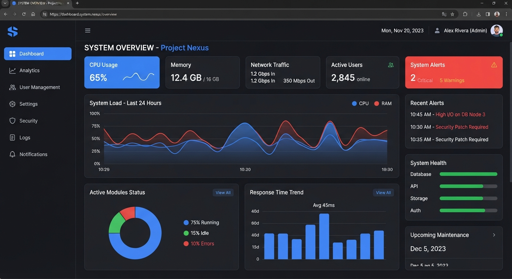

Alta de equipo
Administración registra el equipo con tipo, número de serie y ubicación inicial.
El sistema
SIRAME reemplaza los inventarios en Excel repartidos entre distintas personas por un solo sistema centralizado, con historial completo y permisos por rol.

Arquitectura
Equipo es el centro del sistema: se relaciona con TipoEquipo (qué es), Ubicación (dónde está) y Usuario (quién lo gestiona). A partir de ahí, Traslado, Mantenimiento, Baja e Incidencia registran todo lo que le pasa al equipo a lo largo del tiempo.
Esto significa que, al consultar un equipo, se puede ver de un vistazo su ubicación actual, su historial de traslados, sus mantenimientos y cualquier incidencia reportada — sin cruzar archivos distintos.
Flujo de trabajo
Así se mueve la información dentro del sistema, paso a paso.
Administración registra el equipo con tipo, número de serie y ubicación inicial.
El equipo queda visible para el Coordinador y los Profesores de esa ubicación.
Coordinadores mueven equipo; Profesores reportan fallas cuando ocurren.
Administración da mantenimiento o, si ya no es viable, autoriza la baja formal.
Beneficios
Se acabó buscar el equipo en tres archivos de Excel distintos.
Cada rol ve y edita exactamente lo que le corresponde.
Traslados, mantenimientos y bajas quedan documentados con fecha y responsable.
0
Modelos de datos conectados
0
Roles con permisos propios
0
Sistema para toda la institución
Solicitá acceso y empezá a centralizar el inventario de tu institución hoy mismo.
Solicitar acceso